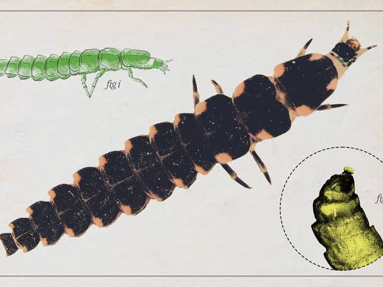

source("vignette-utils.R")
1 Introduction
This vignette demonstrates how to reproduce and analyze occurrence data for Glowworms in Australia, using data from the Atlas of Living Australia (ALA). You’ll learn how to download, clean, enrich, and visualize data with practical, reproducible R functions.
2 Load Required Packages and Utilities
All required functions are organized in vignette-utils.R. You can import them using:
If you’d like to modify the helper functions, you can find them here:ecotourism/vignettes/vignette-utils.R
3 Define Global Parameters
We define basic variables used throughout the vignette:
# global variables
email <- "your_email@email.com"
organism_name <- "glowworms"
organism_title <- "Glowworms"
taxa <- "Arachnocampa"
start <- 2014
end <- 20244 Step 1: Download and Prepare Occurrence Data
organism <- obs_data(taxa, start, end, your_email=email) |> polished_data()This downloads ALA data and performs standard cleaning: renaming columns and removing
NAs.
5 Step 2: Save Cleaned Dataset
mysave(organism_name, organism)This saves the object to the /data folder with the name "glowworms.rda".
6 Step 3: Attach Nearest Weather Station
attach_nearest_station(organism_name)Weather data is restricted to the top 3 stations to keep it lightweight.
7 Step 4: Load and Explore the Data
load("../data/glowworms.rda")
glimpse(glowworms)8 Step 5: Save Raw Version for Further Analysis
organism_raw <- obs_data(taxa, start, end, your_email=email) |> polished_data()
mysave_raw(organism_name, organism_raw)To load it:
organism_raw <- myload_raw(organism_name)
organism_raw |> slice_head(n = 3) |> as_tibble() |> glimpse()9 Step 6: Count Occurrences by State
organism_raw |> my_count(scientificName, obs_state) |> as_tibble() 10 Step 7: Clean Taxonomic Ambiguity
radius_threshold <- 250000
unknowns <- organism_raw |> filter(scientificName == "Arachnocampa")
references <- organism_raw |> filter(scientificName == "Arachnocampa flava")
assign_if_close_to_flava <- function(lat, lon, flava_data, radius) {
dists <- distHaversine(
matrix(c(lon, lat), ncol = 2),
matrix(c(flava_data$obs_lon, flava_data$obs_lat), ncol = 2)
)
if (any(dists <= radius)) "Arachnocampa flava" else "Arachnocampa"
}
unknowns_updated <- unknowns |>
rowwise() |>
mutate(scientificName = assign_if_close_to_flava(obs_lat, obs_lon, references, radius_threshold)) |>
ungroup()
organism <- organism_raw |>
filter(scientificName != "Arachnocampa") |>
bind_rows(unknowns_updated) |>
filter(!is.na(obs_lat), !is.na(obs_lon), !is.na(month),
scientificName %in% c("Arachnocampa flava", "Arachnocampa tasmaniensis"))
mysave(organism_name, organism)11 Visualization
11.1 Spatial Distribution Map
organism |> plot_map1(color_by = scientificName)11.2 Occurrence by State (Updated)
organism |> my_count(scientificName, obs_state) |> as_tibble()12 Weekly, Monthly, and Yearly Trends
organism |> plot_bar_week()
organism |> plot_bar_week_100()
organism |> plot_bar_month()
organism |> plot_bar_year()13 Weather Station Analysis
attach_nearest_station(organism_name)
organism <- myload(organism_name)
glimpse(head(organism, 2))
summarize_state_frequencies(organism_name)14 Monthly and Seasonal Pattern Analysis
plot_monthly_occurrences_by_state(organism_name)
plot_weekly_occurrences_by_state(organism_name)
plot_seasonal_occurrence_polar(organism_name)
plot_monthly_occurrence_map(organism_name)
plot_monthly_occurrence_map_by_state(organism_name)
plot_monthly_distribution_map(organism_name)15 Conclusion
You’ve now learned to:
- Retrieve and clean ALA glowworm data
- Match data with nearby weather stations
- Refine taxonomic data and visualize patterns over time and space
16 Appendix
All helper functions used here are defined in:vignettes/vignette-utils.R
17 Final Output
This is the glimps of your final data :
Rows: 124
Columns: 14
$ obs_lat <dbl> -43.46398, -43.46257, -43.46228, -43.46207, -43.46201, …
$ obs_lon <dbl> 146.8676, 146.8485, 146.8490, 146.8491, 146.8476, 146.5…
$ date <date> 2021-12-14, 2015-12-09, 2017-04-17, 2023-12-21, 2022-1…
$ time <chr> "22:14:23", "15:00:24", "13:31:00", "14:18:00", "18:42:…
$ year <dbl> 2021, 2015, 2017, 2023, 2022, 2024, 2024, 2024, 2024, 2…
$ month <dbl> 12, 12, 4, 12, 12, 12, 12, 12, 12, 11, 12, 12, 12, 12, …
$ day <dbl> 14, 9, 17, 21, 26, 5, 5, 5, 4, 28, 4, 5, 5, 6, 5, 4, 2,…
$ hour <int> 22, 15, 13, 14, 18, 11, 11, 11, 23, 6, 22, 16, 16, 21, …
$ weekday <ord> Tuesday, Wednesday, Monday, Thursday, Monday, Thursday,…
$ dayofyear <dbl> 348, 343, 107, 355, 360, 340, 340, 340, 339, 332, 339, …
$ scientificName <chr> "Arachnocampa tasmaniensis", "Arachnocampa tasmaniensis…
$ record_type <chr> "HUMAN_OBSERVATION", "HUMAN_OBSERVATION", "HUMAN_OBSERV…
$ obs_state <chr> "Tasmania", "Tasmania", "Tasmania", "Tasmania", "Tasman…
$ ws_id <chr> "949610-99999", "949610-99999", "949610-99999", "949610…